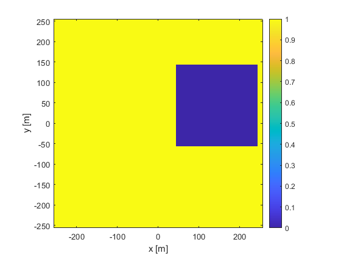
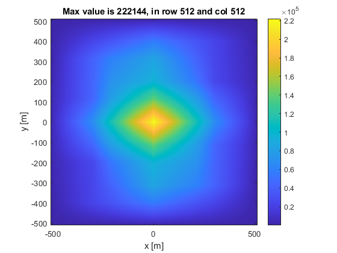
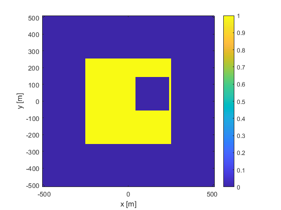

Correlation Integral with Window Functions
This article explains one step in the process of computing an unbiased correlation/covariance of a 2-D random process. The discussion here builds a concept that is used for explaining the corr2_ft_new that replaces the corr2_ft function in the book. I cover temporal and spatial covariance in Some Statistical Definitions, which are important concepts in optical turbulence. In experiments with ergodic random processes, we typically compute the covariance of that process by spatially integrating over a finite-sized window. This window might be a circular-shaped field of view in an image or a circular/annular telescope pupil on a wavefront sensor. Usually, these data are collected on a rectangular camera and analyzed in a computer as 2-D arrays of numbers. The window shape affects the region of integration, and we must properly account for it.
The book is mostly concerned with 2-D functions, like optical images or phase in a pupil. Below, I start with 1-D functions to illustrate the math and concepts in a simpler context. Then, I move up to two dimensions. I do this below for both continuous and discrete windows.
Continuous 1-D Correlation of Window Functions
The time-average correlation of a WSS random process is given by $$ \begin{equation} \Gamma_u\left(\tau\right) = \lim\limits_{T\to\infty} \frac{1}{T} \int\limits_{-T/2}^{T/2} u\left(t\right) u\left(t-\tau\right) \, \textrm{d}t, \end{equation} $$ where \(u\left(t\right)\) is the random process, \(t\) is time, \(\tau\) is a time difference (also called time lag). I refer to a window function as a function that has only two values, 1 and 0, and covers a finite duration. In our context, it multiplies a random process to indicate valid times. For example, \(W\left(t\right) = \textrm{rect}\left(\frac{t}{T_W}\right)\) is nonzero for \( \left\vert t \right\vert < T_W/2 \). Strictly speaking, the rect function takes on a value of 1/2 when \(t = \pm T_W/2\), but often, that property can be ignored. The presence of the rect function might indicate the time period for a which a sensor was on and made measurements of a random process.
This article is not concerned with evaluating the integral for random processes. Instead, that topic is addressed in Improved Correlation Code. When the integrand is the product of two window functions, we denote the integral (with infinite limits) as \(\mathcal{A}\), and it has interesting properties, beginning with $$ \begin{align} \mathcal{A}\left(\tau\right) &= \int\limits_{-\infty}^{\infty} W\left(t\right) W\left(t-\tau\right) \, \textrm{d}t \\ &= \int\limits_{-\infty}^{\infty} W\left(t\right) W\left(t-\tau\right) \, \textrm{d}t \end{align} $$ since the window function \(W\left(t\right)\) is nonzero over a finite time period. Also, this can be evaluated using Fourier transforms according to $$ \mathcal{A}\left(\tau\right) = \mathcal{F}^{-1} \left\{ \left\vert \mathcal{F}\left\{W\left(t\right)\right\} \right\vert^2 \right\}. $$
For the case of zero time lag, $$ \begin{align} \mathcal{A}\left(0\right) &= \int\limits_{-\infty}^{\infty} W^2\left(t\right) \, \textrm{d}t \\ &= \int\limits_{-\infty}^{\infty} W\left(t\right) \, \textrm{d}t \\ &\equiv T_W, \end{align} $$ where \(T_W\) is the total time period over which the window function is equal to \(1\). If \(W\left(t\right)\) represents the period that a sensor was on, \(T_W\) is the total period of the data collection.
A simple example is $$ \begin{align} W\left(t\right) &= \mathrm{rect}\left(\frac{t}{T_W}\right) \\ \mathcal{A}\left(\tau\right) &= \int\limits_{-\infty}^{\infty} \mathrm{rect}\left(\frac{t}{T_W}\right) \mathrm{rect}\left(\frac{t-\tau}{T_W}\right) \, \textrm{d}t \\ &= T_W \mathbf{tri}\left(\frac{\tau}{T_W}\right). \end{align} $$ In evaluating the integral, I have taken advantage of the fact that \(W^2\left(t\right) = W\left(t\right)\) because it takes only values of 1 or 0. When \(\tau=0\), \(\mathbf{tri}\left(0\right) = 1\) so that \(\Gamma_w\left(\tau\right) = T_W\). This makes intuitive sense from the "slide and multiply" interpretation of this correlation integral. When \(\left\vert \tau \right\vert > T_W/2\), the two rect functions do not overlap, so their product is 0, and so the integral evaluates to 0. Conversely, when \(\left\vert \tau \right\vert < T_W/2\), the two functions overlap, so their product is 1, and the integral is equal to the length of their overlap. When the time lag is zero, they overlap completely, so the product integrates to \(T_W\).
Continuous 2-D Correlation of Window Functions
The 1-D case generalizes to 2-D easily. The spatial average correlation of two WSS 2-D signals is given by $$ \begin{equation} \Gamma_u(\mathbf{\Delta r})= \lim\limits_{D_x,D_y\to\infty} \frac{1}{D_x D_y} \int\limits_{-D_x/2}^{D_x/2} \int\limits_{-D_y/2}^{D_y/2} u (\mathbf{r}) u (\mathbf{r}-\mathbf{\Delta r}) \, \textrm{d}x \textrm{d}y, \end{equation}$$ where the \(D_x\) and \(D_y\) are spatial extents in the \(x\) and \(y\) directions. Again, in 2-D, we focus on the integral with infinite limits and develop the same interesting properties as the 1-D case above. In 2-D, a window function (sometimes called a mask in 2-D) has a value of 1 inside a finite region of 2-D space and 0 elsewhere. In optics, this might describe the transmittance of an aberration-free aperture.
Let's use \(W(\mathbf{r}) = W(x,y)\) to denote a spatial window. Like above, a window's auto-correlation integral can be evaluated using Fourier transforms according to $$ \mathcal{A}\left(\mathbf{\Delta r}\right) = \mathcal{F}^{-1} \left\{ \left\vert \mathcal{F}\left\{W\left(\mathbf{r}\right)\right\} \right\vert^2 \right\}. $$
At this point, we can calculate the integral's value at \(\mathbf{r} = \mathbf{0}\), given by $$\begin{equation} \mathcal{A}(\mathbf{\Delta r}=\mathbf{0})=\int W (\mathbf{r}) W (\mathbf{r}) \, \textrm{d}\mathbf{r} = \int W (\mathbf{r}) \, \textrm{d}\mathbf{r} = A, \end{equation}$$ where \(A\) is the area of the window. This property was used in Section 3.2 of the book to remove the effect of the window and isolate the cross-correlation of two signals in the function corr2_ft.
Again, I demonstrate with a couple of well-known examples. After the examples, I cover properties of discrete cross-correlation and then provide Matlab examples. The first example is a square window given by $$\begin{equation} W(x,y)= \textrm{rect}\left(\frac{x}{D}\right) \textrm{rect}\left(\frac{y}{D}\right). \end{equation}$$ Note that in the book, \(D\) is the full width of the rect function, and its area is \(D^2\). This window's correlation is given by $$ \begin{align} \mathcal{A}(\Delta x, \Delta y) &= \int\limits_{-\infty}^{\infty} \int\limits_{-\infty}^{\infty} W(x,y) W(x-\Delta x, y-\Delta y) \, \textrm{d}x \textrm{d}y \\ &= D^2 \textrm{tri} \left(\frac{\Delta x}{D}\right) \textrm{tri} \left(\frac{\Delta y}{D}\right). \end{align} $$ Its peak occurs at \(\Delta x=0, \Delta y=0\). This peak value is \(D^2\), which is equal to the area of the window. Also, note the window has nonzero values for the region \(-D/2 < x < D/2\) and \(-D/2 < y < D/2\), while the window's auto-correlation integral has nonzero values for \(-D < x < D\) and \(-D < y < D\). These two properties of the peak value and nonzero region are fairly general for the auto-correlation integral of window functions.
As a second 2-D example, I consider a circular window function, given by $$\begin{equation} W(\mathbf{r}) = \textrm{circ}\left(\frac{r}{D}\right). \end{equation}$$ Its correlation integral is given by $$\begin{equation} \mathcal{A}(\mathbf{r})= \frac{\pi D^2}{4} \frac{2}{\pi} \left[\cos^{-1}\left(\frac{r}{D}\right) - \left(\frac{r}{D}\right) \sqrt{1-\left(\frac{r}{D}\right)^2}\right]. \end{equation}$$ The peak value occurs at \(\mathbf{r} = \mathbf{0}\) and is equal to \(\pi D^2/4\), which is the area of the circular window. The window has nonzero values for \(0 < r < D/2\), and its auto-correlation integral has nonzero values for \(0 < r < D\).
Discrete Correlation of 1-D Window Functions
In the book, I try to use continuous functions as much as possible. At some point, though, it is necessary to analyze the discrete calculations that actually occur in computers. In this case, we have an array of random variables \(u_n\), where \(n\) is the integer time index, the time between successive samples is \(\Delta t\), and the discrete time values are \(t_n = n \Delta t\). There are various conventions for the range of index \(n\), like \(0\) to \(N-1\) and \(-N/2\) to \(N/2-1\), where \(N\) is the number of samples in array \(u_n\). Because I work with spatial variables most often, I usually let \(n\) take on values from \(-N/2\) to \(N/2-1\). With this in mind, the discrete correlation sum of \(u_n\) is given by $$\begin{equation} \mathcal{A}\left(m\right) = \begin{cases} \sum\limits_{n=-N/2}^{N/2-m-1} \, u_{n} \, u_{n-m}, & \quad m\geq0 \\ \mathcal{A}\left(-m\right), & \quad m < 0 \end{cases}. \end{equation}$$ This form is like a Riemann sum for the correlation integral above. The expression here is a sum over time steps, rather than an integral over a continuous time variable. The index \(m\) is the integer lag index, and the corresponding time lag is \(m \Delta t\). There are \(N\) time samples, so there are \(N\) nonzero lags \(m\), which is the top case above. The bottom case comprises \(N-1\) lags, for a total of \(2N-1\) values in \(\mathcal{A}\left(m\right)\).
Let \(W_n\) be a 1-D discrete window that has \(N_{nz}\) nonzero values in it. In computing the discrete correlation above for this window, consider \(\mathcal{A}\left(0\right)\). Its value is $$\begin{equation} \mathcal{A}\left(0\right) = \sum\limits_{n=-N/2}^{N/2-1} \, w_{n}^2 = N_{nz}. \end{equation}$$ The sum equals \(N_{nz}\) because the window values \(W_n\) are either \(0\) or \(1\). \(N_{nz}\) values are equal to \(1\), while \(N-N_{nz}\) values are equal to \(0\). This is the peak value of the window's correlation sum. The sum for all other values of \(m\) is less than \(N_{nz}\).
For 1-D signals, this discrete correlation can be calculated using Matlab's function xcorr. However, the documentation for xcorr describes a slightly different form given by $$\begin{equation} \mathcal{A}\left(m\right) = \begin{cases} \sum\limits_{n=0}^{N-m-1} \, u_{n+m} \, u_{m}, & \quad m\geq0 \\ \mathcal{A}\left(-m\right), & \quad m < 0 \end{cases}. \end{equation}$$ There are two changes in this second version of the correlation sum. First, the time index \(n\) runs from \(0\) to \(N-1\), which makes sense. In programming languages, arrays do not have negative indices. However, Matlab uses 1-based indexing for its arrays, so in Matlab code the array indices are numbered \(1\) to \(N\). Second, the subscript of the second factor in the sum \(n+m\), rather than \(n-m\). This has no effect because we just need the difference between the two indices to be \(m\), due to symmetry in the correlation sum.
This article discusses only auto-correlation, but xcorr can compute a cross-correlation if two signals are provided as the first two arguments. A full discussion of xcorr is beyond the scope of this article, but I provide a more detailed description with examples in Improved Correlation Code. To compute this discrete correlation sum in Matlab use,Gamma = xcorr(w);
Here is an example of the correlation sum with a rectangular window. The window is the variable w, and it has 10 samples. Only the four central values are nonzero. The output is shown below the code.
1 % corrRectWindow1D.m 2 clear variables; clc; 3 N = 10; % number of samples 4 w = [0 0 0 1 1 1 1 0 0 0]; % window function 5 wCorrNneg = zeros(1,N); % allocate space for correlation, just nonnegative lags 6 % explicit sum for correlation: 7 for m = 0 : N-1 8 wCorrNneg(m+1) = sum(w(m+1:N) .* w(1:N-m)); 9 end 10 % use symmetry to fill in negative lags: 11 wCorrLoop = cat(2, wCorrNneg(N:-1:2), wCorrNneg); 12 % use xcorr to compute the same thing: 13 wXCorr = xcorr(w, 'none'); 14 % display correlation from loop: 15 fprintf('wCorrLoop = \n') 16 fprintf('%1.0f ', wCorrLoop) 17 fprintf('\n') 18 % display correlation from xcorr: 19 fprintf('wXCorr = \n') 20 fprintf('%1.0f ', wXCorr) 21 fprintf('\n')
wCorrLoop = 0 0 0 0 0 0 1 2 3 4 3 2 1 0 0 0 0 0 0 wXCorr = 0 0 0 -0 0 0 1 2 3 4 3 2 1 0 0 -0 0 0 0
The window has \(N = 10\) values, and the resulting correlation sums have \(2N-1 = 19\) values. Notice that in the loop covers \(0 \leq m \leq N-1\), but the array indices are numbered \(1-N\) because Matlab uses 1-based array indexing. The window correlation from the explicit loop and xcorr are essentially the same with slight differences leading to the negative signs on two of the values in the xcorr output. The peak value is \(N_{nz} = 4\), and it is in the \(N^{th}\) position of the correlation sum.
I illustrate this one more time with a window that is not contiguous. This time, line 4 is changed so that the window is given by
4 w = [0 1 0 1 0 1 1 1 1 0]; % window function
The resulting output is:
wCorrLoop = 0 0 1 1 2 2 2 4 3 6 3 4 2 2 2 1 1 0 0 wXCorr = 0 0 1 1 2 2 2 4 3 6 3 4 2 2 2 1 1 0 0
There are \(N_{nz} = 6\) nonzero values in the window this time, and the peak value of the correlation sum is \(6\). It still occurs in the \(N^{th}\) position of the correlation sum.
Discrete Correlation of 2-D Window Functions
In optics, we often work with 2-D arrays of data from cameras, wavefront sensors, and the like. Fortunately, the development of the previous section generalizes to 2-D in a straightforward way. With that in mind, the 2-D discrete correlation sum is given by $$\begin{equation} \mathcal{A}\left(m,n\right) = \begin{cases} \sum\limits_{i=0}^{N-m-1} \sum\limits_{j=0}^{N-n-1} \, u_{i+m,j+n} \, u_{i,j}, & \quad m\geq0 \\ \mathcal{A}\left(-m,-n\right), & \quad m < 0. \end{cases} \end{equation}$$
Matlab provides the function xcorr2 in its Signal Processing Toolbox to compute the discrete correlation sum like this:
Gamma = xcorr2(w);
Here is an example of its usage that is similar to the 1-D examples of xcorr above. The code below is followed by the resulting command-line output and figures. This example shows both the usage of xcorr2 function and a FT-based calculation. There are a few key differences to note: The output of xcorr2 has \(2N-1\) rows and \(2M-1\) columns, as expected. For the FT-based calculation, the user needs to pad the input arrays to have \(2N\) rows and \(2M\) columns. The prevents a circular correlation from being calculated. As a result, the output of the FT-based calculation has \(2N\) rows and \(2M\) columns, rather than \(2N-1\) rows and \(2M-1\) columns.
1 % checkXcorr2.m 2 3 % define window and spatial grid: 4 N = 512; % number of grid points per side 5 w = ones(N); % window that covers the entire grid 6 w(201:400,301:500) = 0; 7 dx = 1; % grid spacing [m] 8 x = (-N/2 : N/2-1) * dx; % spatial grid 9 10 % count the number of nonzero entries, output to command line: 11 sprintf('There are %i nonzero entries in w', sum(w(:))) 12 13 % show original window: 14 figure(1); clf; 15 imagesc(x, x, w); 16 axis('image', 'xy'); 17 colorbar; 18 xlabel('x [m]'); 119 ylabel('y [m]'); 20 21 % compute autocorrelation from original window using Matlab's xcorr2: 22 c1 = xcorr2(w, w); 23 % size of c1 is 2N-1 by 2N-1 24 xCor2 = (-N+1 : N-1)*dx; % spatial grid for xcorr2 result 25 % find the max value and its row & column: 26 [M, I] = max(c1(:)); 27 [row, col] = ind2sub([2*N-1, 2*N-1], I); 28 29 % show window correlation from xcorr2: 30 figure(2); clf; 31 imagesc(xCor2, xCor2, c1); 32 axis('image', 'xy'); 33 colorbar; 34 xlabel('x [m]'); 35 ylabel('y [m]'); 36 title(sprintf('Max value is %i, in row %i and col %i', M, row, col)); 37 38 %% FT-based calculation of the correlation 39 40 % define zero-padded window and grid so that non-circular correlation is 41 % computed: 42 NPad = 2*N; % number of grid points in zero-padded array 43 wPad = zeros(NPad, NPad); % making zero-padded array 44 idxOrig = (-N/2 : N/2-1) + N+1; % indices for original window 45 wPad(idxOrig, idxOrig) = w; % fill center of zero-padded array 46 xPad = (-NPad/2 : NPad/2-1)*dx; % coordinates for zero-padded array 47 48 % show padded window: 49 figure(3); clf; 50 imagesc(xPad, xPad, wPad); 51 axis('image', 'xy'); 52 colorbar; 53 xlabel('x [m]'); 54 ylabel('y [m]'); 55 56 % compute autocorrelation from padded window using Fourier transforms: 57 df = 1/NPad; % spatial frequency grid spacing 58 c2 = ift2(abs(ft2(wPad, dx)).^2, df); 59 % wFT = ft2(wPad, dx); 60 % wFtFlip = ft2(flip(flip(wFT,1),2), dx); 61 % c2 = ift2(wFT.*wFtFlip, df); 62 % find the max value and its row & column: 63 [M, I] = max(c2(:)); 64 [row, col] = ind2sub([2*N, 2*N], I); 65 66 % show window correlation from Fourier transform: 67 figure(4); clf; 68 imagesc(xPad, xPad, abs(c2)); 69 axis('image', 'xy'); 70 colorbar; 71 xlabel('x [m]'); 72 ylabel('y [m]'); 73 title(sprintf('Max value is %i, in row %i and col %i', M, row, col));
ans =
'There are 222144 nonzero entries in w'
 

In the code above, w is the input to xcorr2, and it has size \(N = M = 512\). The output is c1, and it has size \(2N-1 = 2M-1 = 1023\). The peak value of c1 is equal to the number of nonzero entries, and it is located in row \(N\), column \(M\).
In the code above, wPad is the input to the FT-based calculation, and its size is padded size is \(2N = 2M = 1024\). The outputs of the functions ft2 and ift2 have the same size as the input, so the variable c2 has size \(2N = 2M = 1024\). The origin of the spatial grid for c2 is located in row \(N+1 = 513\), column \(M+1 = 513\). Thus, its peak value located at row 513 and column 513.